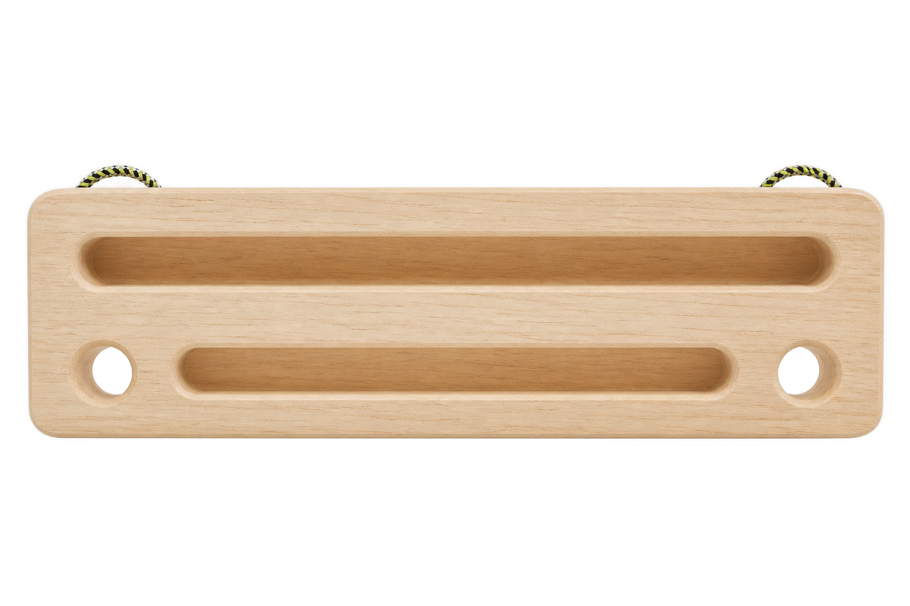
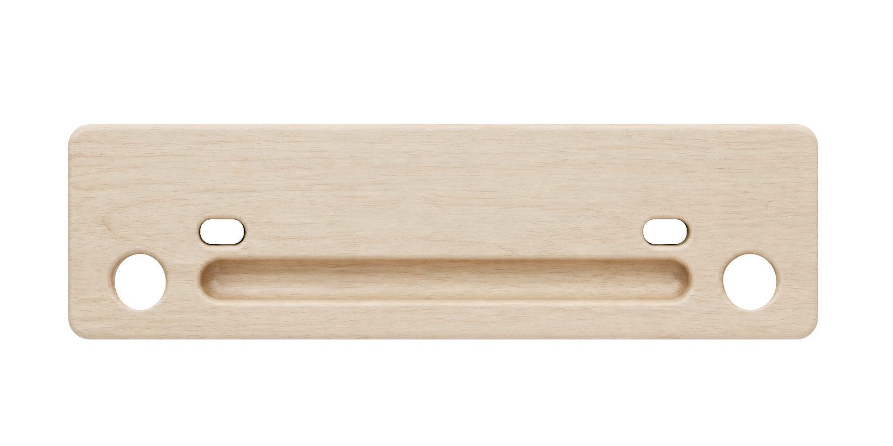
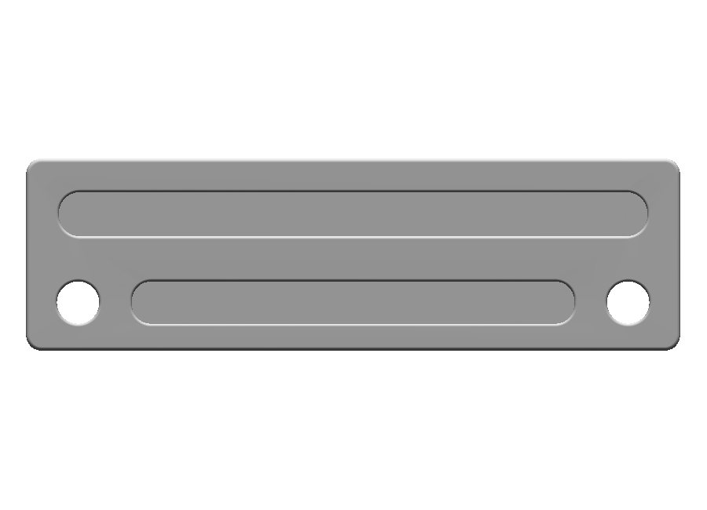
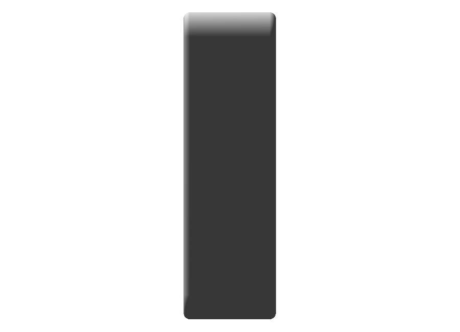
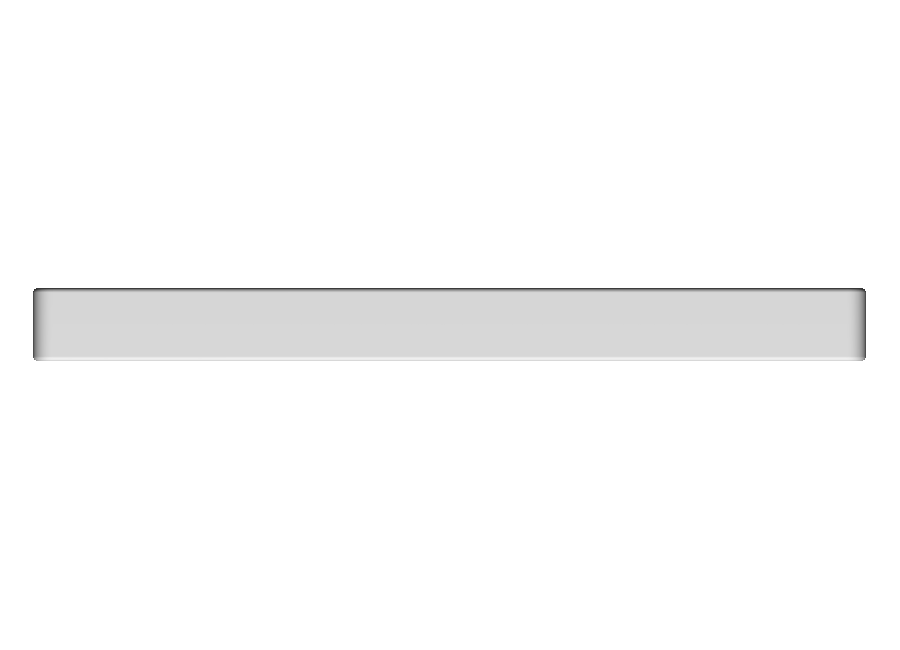
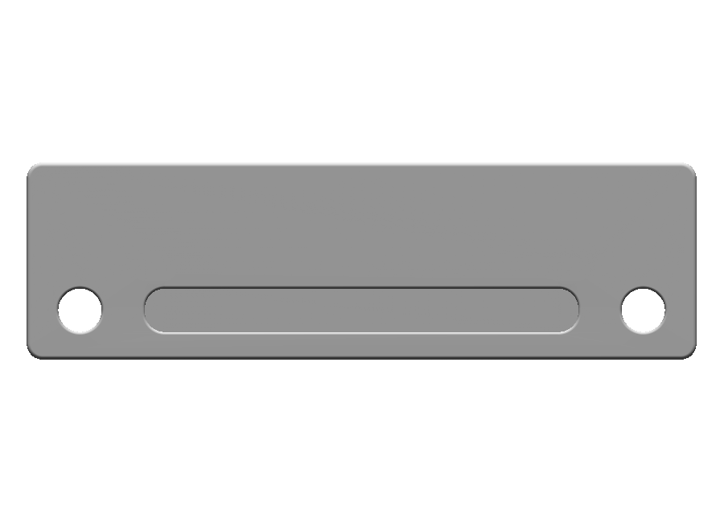
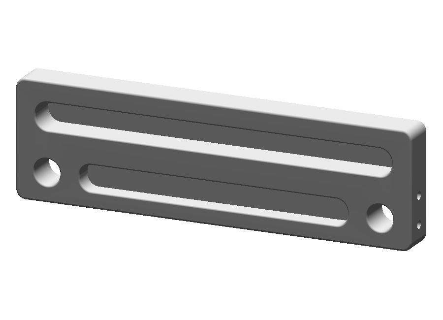
Prior committed raster compared with native CAD front, side, top, rear and oblique views. No prior CAD side/top asset existed. Uniform material-free geometry; cord review follows CAD route solving. These are technical candidate views, pending user review.







Actual descriptor-bound generated routes; cord radius and total length are display estimates. Native solid clearance results are retained in the adjacent cord-check reports.
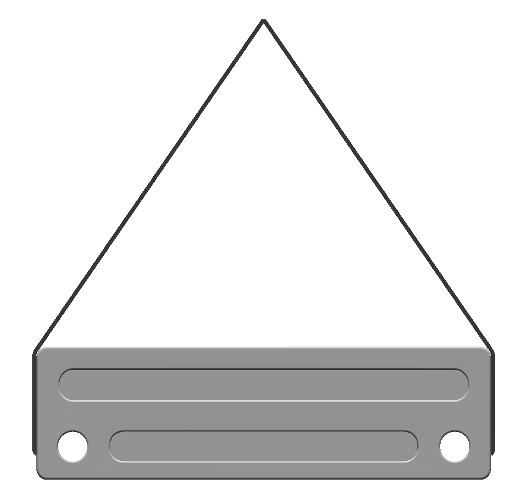
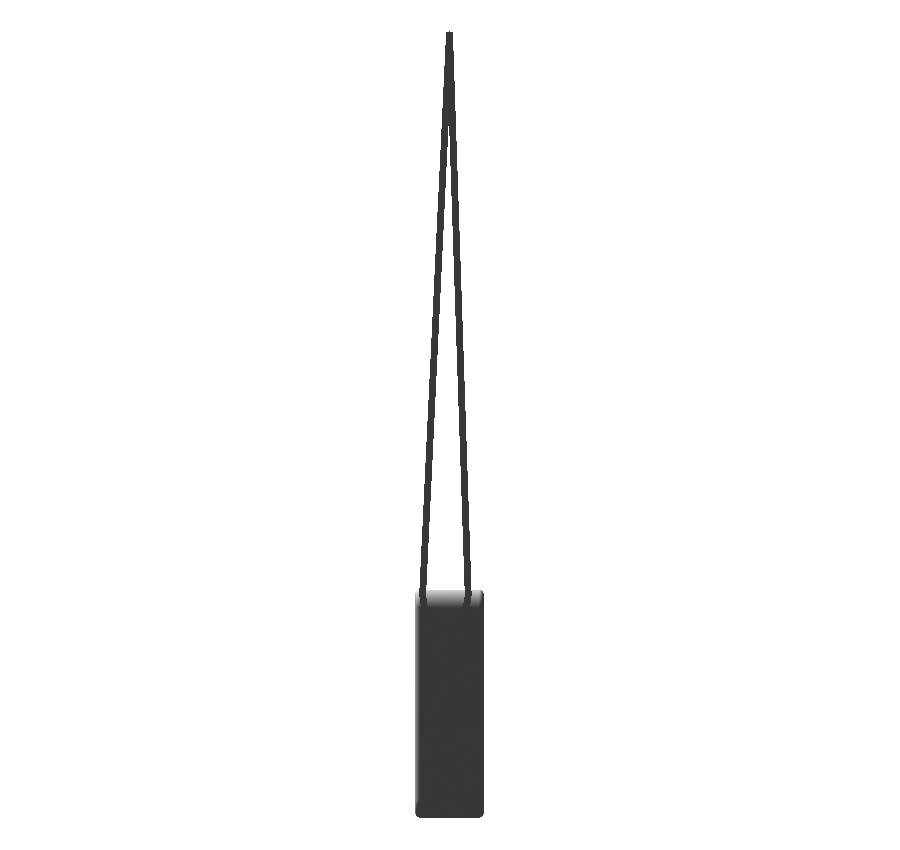
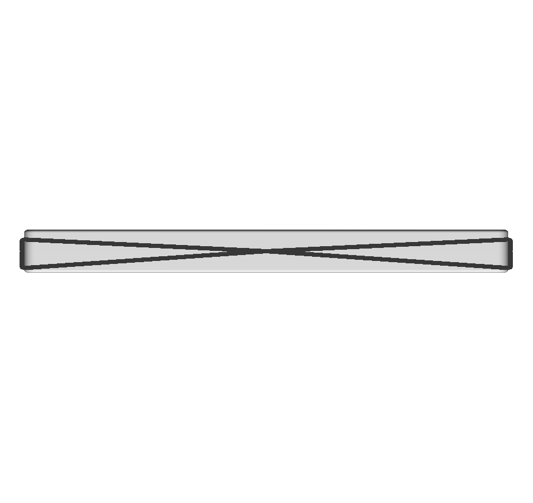
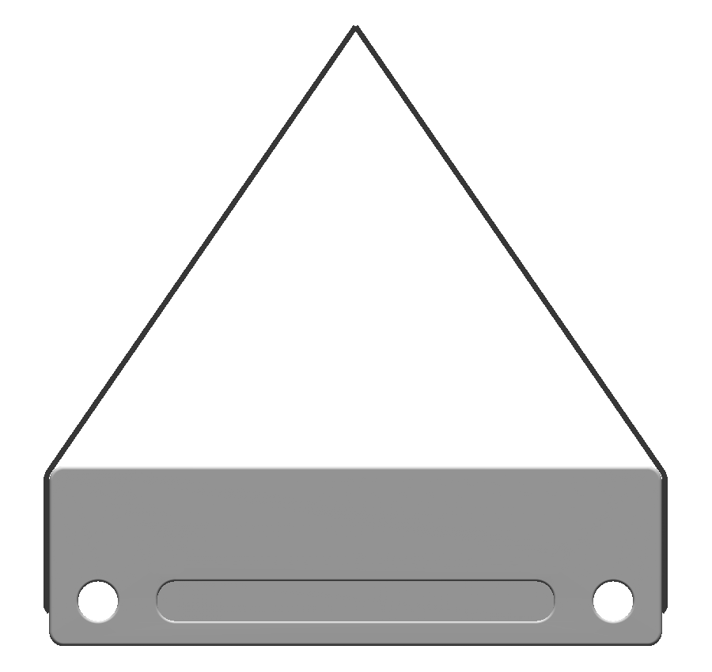
Current posed body and unchanged solved cord routes, viewed along the corrected native-local camera direction after applying the board rotation. Source and numeric route identity are recorded in camera-correction-proof.json.
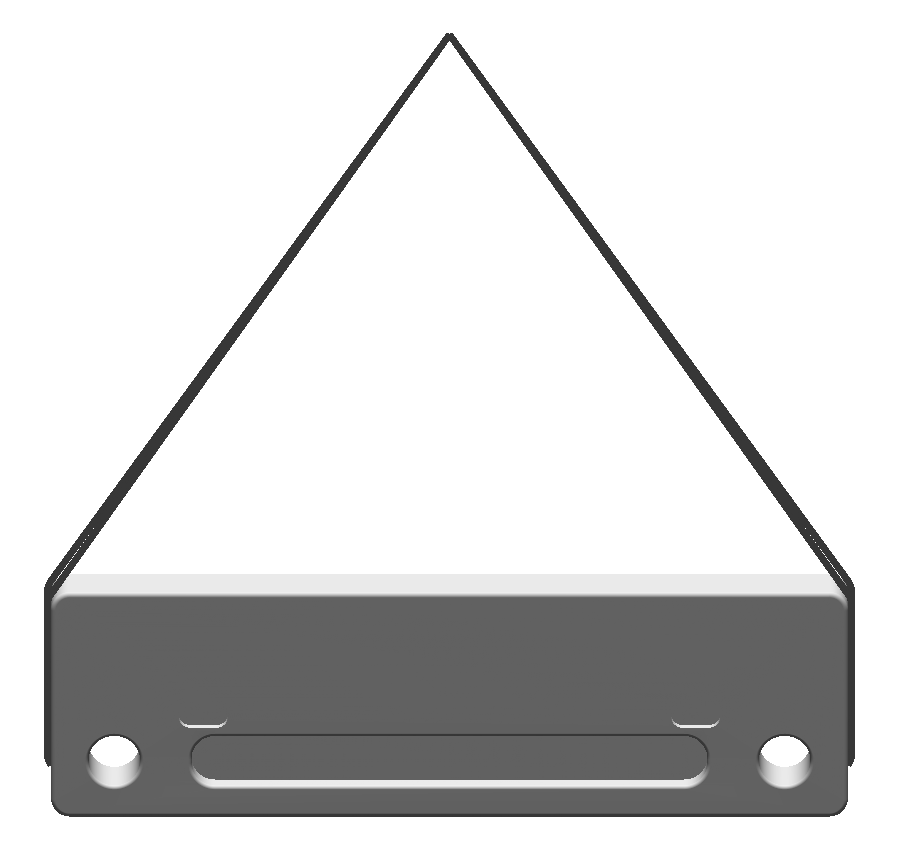